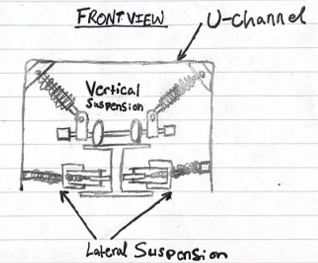

Lateral Suspension
Purpose
Apply SolidWorks to real world application and transform transportation for a more sustainable future by applying it to hyperloop technology.
Skills Learned:
Design Process
Since, I am a chemical engineer, our classes aren't design with SolidWorks in our curriculum. I had training in SolidWorks from joining the lateral suspension for Texas Guadaloop. I felt that I wanted to retain the newfound knowledge. To learn more of the story: click here.
Goal
The goal of the suspension subsystem is the minimize the vibrations of the pod and protect the internal components to ensure the pod remains centered on an I-Beam. The suspension also needs to confirm that all components are within a safety factor of > 2.
Overview Process
- Research and design feasible design concepts from manufacturing knowledge and other hyperloop teams.
- Figure out estimate integration of the suspension with other subsystems.
Semester 1
Design Considerations
- Previous reliance on air-bearings for levitation and suspension and want to shift in leviation and propulsion design.
- Modularity of new designs and integration for other subsystems.
- Emphasize on the simplicity and ease for manufacturing.
- Minimize rol [vertical] and yaw [lateral] (rotation along vertical axis) and little pitch considerations
Design
- Placement: Between u-channel and I-beam
- Airshocks: shock absorbers that forces pod to remain centered along I-beam and enables the team to change the stiffness of the spring according to the needs of the team.
- Custom Mounts: integrates the lateral suspension system with the u-channel
- Triangular Braces: triangles are one of the most stable and strong geometry in mechanical engineering and design. There are triangules seen on bridges and infrasture when forces is applied to it the force is distributed down each side.
Manufacturing Design
- CNC, manual mill, and lathe triangular braces as well as drilled holes
- Had leftover wheels and air shocks
- 3D print custom part with nylon and carbon fiber
Semester 2
Manufacturing
- The full assembly cost was estimated: $4,286.88
- 3D Print was using onyx
- Part numbering with quantity to ensure clear communication with other team members while manufacturing.
- Shock Absorbers: Fox DPS Float [lateral], Fox DHX2 [vertical] with 4 each
- 8 wheels total across suspension
- Water Jet was used to cut 2ft x 4ft Al plate for compression plate (lateral/vertical/rear)
- CNC, Lather, Mill: Tracer wheel, mount, axel and triangular plates
Integration Hardware

Improvements and Challenges
- Gen II Design: hope to incorporate magnets into the suspension to make the suspension frictionless. The goal is to make it electrodynamic or electromagnetic suspension system.
- Less the usage of 3D prints: a lot of issues with the prints and the sturdiness of the suspension subsystem.
- Focus more on testing: didn't have a lot of time to build a testing rig.
- Communicate with other subsystems to encourage a more smooth integration: had to integrate the design a lot of times because of the designs changing per subsystem that rely on each other.
- Operated on limited budget, weight, time and can't touch the I-beam.
Overall Thoughts
The project thought me the power of resistance by rapid prototype and design collaboration to ensure integration of parts. As a chemical engineer, there was a lot of knowledge gaps, but the role allowed me to grow and provide a different perspective from different backgrounds. I felt that I had to try 10x harder to make sure I am not slowing the team down along with completing my other assignments on the side. How power it can be because there were a lot of times that I was fraustraued and wanted to give up, but I couldn't let myself do it! I told myself lets try another way and try to find a better solution. Mutiple times and well...it worked because I was able to achieve the final product with my team helping me grow along the way. Be adaptive. Be innovative. Be you. Ask questions and don't be afriad. Communicate what you are thinking as it may improve efficency.
It is also best to get wide range of feedback for designs for multiple integration for development.